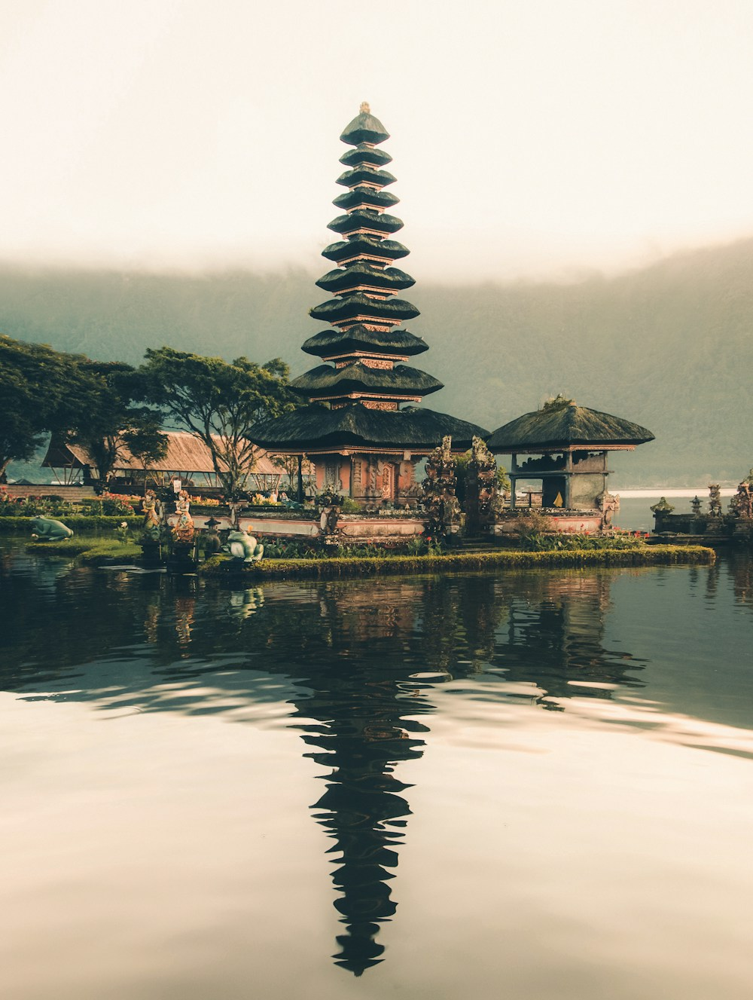
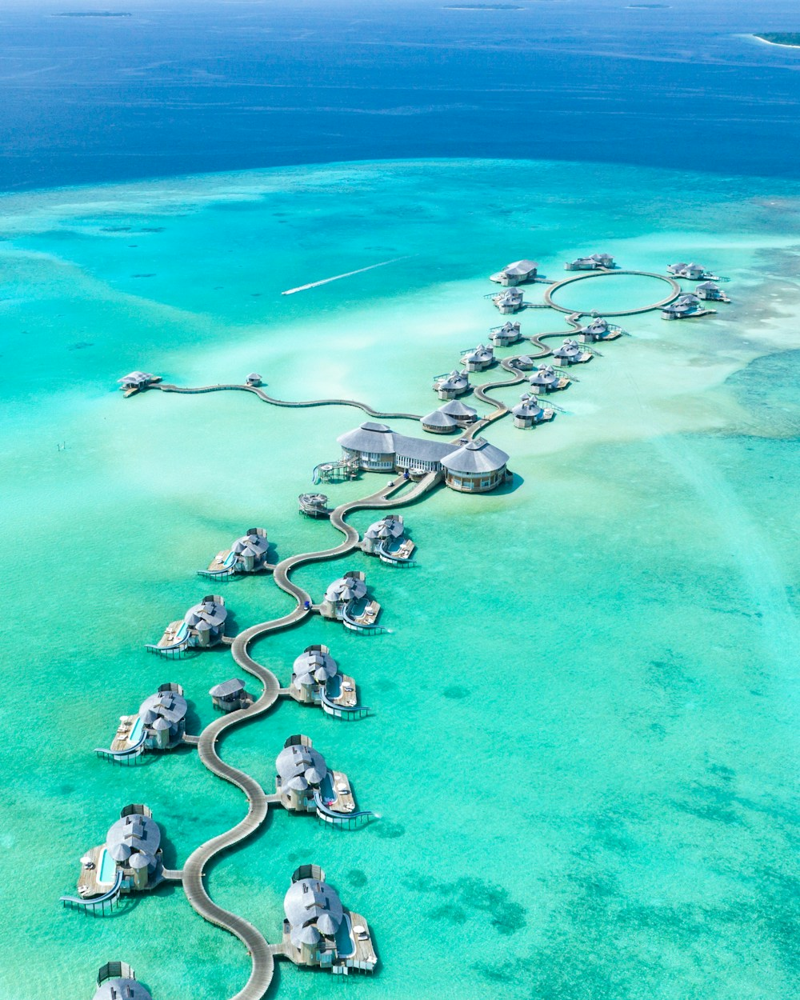
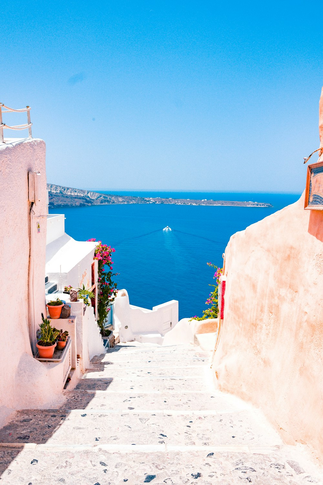

Travel thoughtfully · 4 min read
Why the best thing on your itinerary might be the space between plans.
POSTCARDS, PERSPECTIVES & POSSIBILITIES
Stories to spark your curiosity. Ideas to take with you.
A little daydreaming, encouraged.
Travel thoughtfully · 4 min read
Why the best thing on your itinerary might be the space between plans.
A LITTLE MORE TO EXPLORE
Notes for the curious travellerField notes · 5 min read
Pastel villages, salty air and the simple joy of a very long lunch.
The travel edit · 6 min read
A little preparation leaves a lot more room for discovery.
The best travel stories often start with one small idea. Explore our journeys and see where yours might lead.
Explore the possibilitiesA WORLD OF POSSIBILITIES
You bring the daydream. We’ll help with the details.
ABOUT THIS DEMO
Elsewhere is a fictional travel brand created to demonstrate a complete website. Destinations and itineraries are illustrative; prices are sample USD amounts, not live offers. No travel services are sold here.
Your enquiries and sample bookings are private to this browser, stored on the demo server in a separate workspace. Use fictional details only. No emails are sent, no payments are collected, and no travel is reserved.
Essential browser cookies resume your private workspace and dashboard access. Your workspace expires after 4 idle hours; later API traffic cleans up expired files. Leaving the dashboard ends dashboard access and keeps your edits until expiry. A fresh demo starts with sample data. Other browsers have separate workspaces. No advertising or analytics cookies are used.
Photography is sourced from Unsplash and stored locally. Font files are served locally. See the project README for credits and setup.
Europe / DESTINATION NOTES
Sun-warmed villages, long lunches and coastlines worth getting lost along. Find your own version of la dolce vita.

Asia / DESTINATION NOTES
Quiet gardens and electric cities. Small tea houses and extraordinary meals. Discover the beautiful contrasts that make Japan unforgettable.

Asia / DESTINATION NOTES
Wake slowly among the palms, walk through emerald rice terraces and watch the sky turn pink above the Indian Ocean.
Africa / DESTINATION NOTES
Wide-open savannahs, extraordinary wildlife and evenings around the fire. A journey with room for wonder.

Indian Ocean / DESTINATION NOTES
Barefoot mornings, clear lagoons and a horizon that goes on forever. Make space for the simple pleasure of doing very little.

Europe / DESTINATION NOTES
Whitewashed lanes, hidden coves and tables that spill into the sunshine. Island time looks good on you.
10 DAYS / Culture & discovery
Market mornings, vineyard afternoons and a room with a sea view. An unhurried introduction to the Italy we dream about.
Florence → Tuscany → Cinque Terre
Settle into a small city hotel, wander the artisan quarter and explore the markets with a local host.
Stay in a countryside retreat, cook a seasonal lunch and leave an afternoon free for the pool.
Follow the paths between colourful villages, take a sunset boat trip and enjoy one last very long lunch.
Sample journey includes accommodation, the guided experiences described and transfers between overnight stops. International flights, insurance and personal expenses are excluded. Every itinerary can be adapted.
From $3,250 per person
Illustrative USD pricing · based on two sharing
12 DAYS / Culture & discovery
Follow the thread from Tokyo’s backstreets to Kyoto’s quiet gardens, with a restorative stay in the mountains along the way.
Tokyo → Hakone → Kyoto
Explore neighbourhood food spots, independent shops and the city’s extraordinary contrasts.
Check into a traditional ryokan, soak in an onsen and enjoy a carefully prepared seasonal dinner.
Visit temple gardens, learn about tea and make time for a countryside day trip.
Sample journey includes accommodation, the guided experiences described and transfers between overnight stops. International flights, insurance and personal expenses are excluded. Every itinerary can be adapted.
From $4,850 per person
Illustrative USD pricing · based on two sharing
9 DAYS / Rest & reconnect
Green valleys, creative villages and ocean air. A gentle journey designed around the pleasure of slowing down.
Ubud → Sidemen → Uluwatu
Visit a morning market, try a cooking class and spend a quiet afternoon among the palms.
Walk the Sidemen rice terraces with a local guide and settle into a peaceful valley retreat.
Head south for cliffside sunsets, beach mornings and a final dinner overlooking the water.
Sample journey includes accommodation, the guided experiences described and transfers between overnight stops. International flights, insurance and personal expenses are excluded. Every itinerary can be adapted.
From $2,450 per person
Illustrative USD pricing · based on two sharing
11 DAYS / Wild & adventurous
The excitement of a first wildlife sighting, nights under an enormous sky and a few barefoot days by the sea.
Arusha → Serengeti → Zanzibar
Rest in Arusha before meeting your guide and setting out toward the highlands.
Explore the Serengeti and Ngorongoro with a guide, with relaxed evenings at a small safari camp.
Trade the savannah for warm water, a Stone Town wander and long beach afternoons.
Sample journey includes accommodation, the guided experiences described and transfers between overnight stops. International flights, insurance and personal expenses are excluded. Every itinerary can be adapted.
From $6,250 per person
Illustrative USD pricing · based on two sharing
7 DAYS / Rest & reconnect
A small island, a beautiful room and an entirely open diary. Sometimes, that is all the itinerary you need.
Malé → Your island retreat
Arrive in Malé and transfer to your island retreat for a first swim before sunset.
Snorkel the lagoon, book a sailing experience or simply enjoy the shade of a palm.
Make time for a final sunrise and a slow breakfast before your return transfer.
Sample journey includes accommodation, the guided experiences described and transfers between overnight stops. International flights, insurance and personal expenses are excluded. Every itinerary can be adapted.
From $3,950 per person
Illustrative USD pricing · based on two sharing
10 DAYS / Culture & discovery
Ancient stories, family-run tavernas and the kind of blue you thought only existed in photographs.
Athens → Naxos → Santorini
Explore the historic centre, visit the Acropolis and enjoy the city’s lively food scene.
Settle near the beach, visit mountain villages and try a hands-on island cooking class.
Discover volcanic landscapes, walk the village lanes and sail into a memorable sunset.
Sample journey includes accommodation, the guided experiences described and transfers between overnight stops. International flights, insurance and personal expenses are excluded. Every itinerary can be adapted.
From $2,950 per person
Illustrative USD pricing · based on two sharing
Travel thoughtfully / 4 min read
Why the best thing on your itinerary might be the space between plans.
We tend to measure a trip by how much we fit into it. The museums visited, the cities ticked off, the reservations made. But the moments we remember often happen in between.
A second coffee in a sunny square. A conversation with a shopkeeper. Taking the longer route home because the light is particularly lovely. These are not interruptions to the journey. They are the journey.
Try building your next trip around fewer bases. Stay for three or four nights instead of moving every day. Choose one experience you are excited about, then leave the rest of the afternoon open.
Travelling slowly also gives you more time to choose small, locally owned places and learn something about the community hosting you. Ask questions, listen carefully and let curiosity shape the day.
A good itinerary should offer a sense of possibility. Give yourself permission to change your mind, take a nap or return to the café you liked yesterday. You do not have to see everything to feel somewhere.
Turn inspiration into a journeyField notes / 5 min read
Pastel villages, salty air and the simple joy of a very long lunch.
The Riviera rewards an early start, but not a hurried one. Wander down to the harbour while the village is waking up, find a coffee and watch the boats begin their day.
The villages of Cinque Terre are connected by trains and a network of walking paths. Check local trail conditions before setting out, and carry water, comfortable footwear and plenty of time.
Stay in one place for a few nights. Daylight brings bustle, but the early mornings and evenings have a different rhythm. You begin to recognise the same faces in the square.
For lunch, look for a short seasonal menu and a place where you would be happy to linger. Order something local, enjoy the view and resist the temptation to turn the meal into a checklist.
The loveliest souvenir may be a new habit: taking your time.
Turn inspiration into a journeyThe travel edit / 6 min read
A little preparation leaves a lot more room for discovery.
For a first journey, Tokyo and Kyoto make a wonderful pairing. Their different rhythms help you appreciate how many versions of Japan can exist in one trip.
Build in a quieter stop between the cities. A night or two in a ryokan offers space to slow down and experience a different style of hospitality.
Keep your daily plans geographically focused. Exploring one neighbourhood well often feels more rewarding than crossing a city repeatedly to visit a long list of sights.
Learn a few simple phrases, observe local signs and ask before photographing people. Small acts of care make travelling more comfortable for everyone.
Finally, leave room for the unexpected. The tiny restaurant near your hotel or a garden discovered by chance may become the part you talk about most.
Turn inspiration into a journey